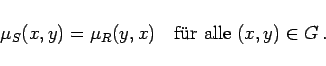
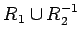

Inhalt Index DeskTop Bronstein

 Algebra und Diskrete Mathematik Fuzzy-Logik Fuzzy-wertige Relationen Fuzzy-Relationen
Algebra und Diskrete Mathematik Fuzzy-Logik Fuzzy-wertige Relationen Fuzzy-Relationen


|  | (5.390) |
| Beispiel |
|
Die inverse Relation R2-1 bedeutet ,,im wesentlichen kleiner als``; die Vereinigung  kann als Beziehung ,,im wesentlichen kleiner oder ungefähr gleich`` beschrieben werden. |